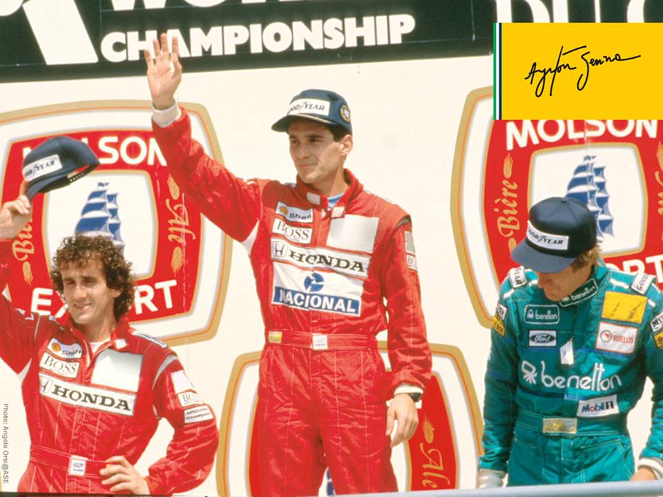

No esporte mais global e veloz do mundo, um piloto é considerado o mais rápido de todos os tempos: Ayrton Senna da Silva. Seus expressivos números ajudam a explicar porque o piloto ganhou status de mito do esporte: foram três títulos mundiais de F1, 41 vitórias, 65 poles e 80 pódios entre 1984 e 1994. Mas Senna é mais do que isso: o brasileiro foi o responsável por alguns dos momentos mais mágicos da principal categoria do automobilismo mundial. Ayrton estabeleceu um novo patamar de excelência no esporte. Sua supremacia era evidenciada em três situações onde o desafio de guiar acima dos 300 km/h é ainda mais intenso: na chuva, na execução de voltas perfeitas nas poles e nos circuitos de rua – em Mônaco, o brasileiro é até hoje o recordista de vitórias.
Trajetória
Os primeiros passos de Ayrton Senna na Fórmula 1 aconteceram na temporada de 1984, e a Toleman foi sua primeira equipe. Em sua terceira corrida, na África do Sul, o piloto brasileiro marcou seu primeiro ponto na categoria. Já no GP de Mônaco, ele esteve muito perto de conquistar sua primeira vitória na Fórmula 1. Em Mônaco, Senna largou apenas em 13º, mas rapidamente chegou ao terceiro lugar. Depois de conseguir ultrapassar Niki Lauda, ele passou a ameaçar a liderança de Alain Prost.
Depois de iniciar sua trajetória na Toleman, equipe pela qual correu apenas em sua primeira temporada na Fórmula 1, Senna se transferiu para a Lotus em 1985. Na primeira temporada em sua nova equipe, o brasileiro conquistou 7 pole positions, mas 7 também foi o número de vezes que precisou abandonar as corridas por conta de problemas mecânicos. Naquele ano, ele venceu duas provas. Ainda naquele ano, Senna venceu o GP da Europa. O brasileiro conseguiu mais quatro pódios e encerrou o campeonato na quarta colocação. Alain Prost, da McLaren, se sagrou campeão.
Em 1986, Senna foi novamente o quarto colocado do campeonato de pilotos da Fórmula 1. Naquela temporada, ele venceu os GPs da Espanha e dos Estados Unidos. No GP do Brasil, foi pole position, mas acabou em segundo, atrás de Nelson Piquet. Ainda na Lotus, Ayrton Senna foi o terceiro colocado do mundial de 1987, quando venceu os GPs de Mônaco e dos Estados Unidos e conquistou outros seis pódios.
Títulos
Em 1988, Ayrton Senna chegou à McLaren para ser companheiro de Alain Prost. Os dois pilotos venceram 15 das 16 corridas dessa temporada, mas o brasileiro levou a melhor da disputa interna da equipe e conquistou seu primeiro título na Fórmula 1. No ano em que foi campeão mundial pela primeira vez, Senna venceu 8 corridas: San Marino, Canadá, Estados Unidos, Inglaterra, Alemanha, Hungria, Bélgica e Japão. Ele ainda ficou em segundo no México, na França e na Austrália. Já em 1989, as posições se inverteram e Prost foi o campeão, à frente de Senna. O campeonato ficou marcado por um acidente no GP do Japão, penúltima prova da temporada, em que os dois pilotos da McLaren se chocaram, levando o francês a deixar a corrida. O brasileiro, por sua vez, voltou à pista e venceu o grande prêmio, mas acabou desqualificado por ter recebido ajuda de fiscais da pista, que empurraram seu carro após o acidente com Prost.
Bicampeonato
O bicampeonato de Senna na Fórmula 1 veio em 1990. Naquele ano, Alain Prost havia se transferido para a Ferrari. O brasileiro venceu 6 corridas (Estados Unidos, Mônaco, Canadá, Alemanha, Bélgica e Itália), mas, novamente, um acidente no Japão foi o momento mais marcante. Senna largou na pole position, mas foi ultrapassado por Prost na largada. Na disputa pela primeira posição, os dois pilotos se chocaram logo na primeira curva e deixaram a prova, em resultado que levou o brasileiro ao título mundial.
Tricampeonato
Ayrton Senna se sagrou tricampeão da Fórmula 1 em 1991, quando iniciou de maneira impressionante a temporada. Ele venceu todas as quatro primeiras corridas, inclusive o GP do Brasil, em Interlagos. O piloto brasileiro encerrou aquele ano com 7 vitórias e larga vantagem para o vice-campeão Nigel Mansell. Já em 1992, Senna venceu três GPs (Mônaco, Hungria e Itália), mas terminou o campeonato apenas em quarto lugar. Com a ascensão da Williams, o campeão foi Mansell, que ganhou 9 das 16 corridas. A trajetória de Senna na McLaren foi encerrada em 1993, quando ele foi vice-campeão. O brasileiro venceu os GPs do Brasil, da Europa, de Mônaco, do Japão e da Austrália, mas acabou a temporada atrás de Alain Prost.
Legado
No seu esporte, as marcas deixadas são incontáveis. Em 1990, o autódromo de Interlagos passou por uma mudança radical no seu traçado e foi proposta uma curva inclinada para ligar a reta dos boxes à curva do sol. Ayrton não perdeu a oportunidade e propôs que um “S” fizesse a ligação, numa clara alusão ao sobrenome tão adorado pelos brasileiros. Sua morte trouxe novas normas de segurança para a F1 que há muito já se faziam necessárias: novas barreiras, curvas redesenhadas para minimizar a possibilidade de acidentes, altas medidas de segurança e o próprio cockpit dos pilotos repensado. Além do reconhecimento público, Senna se tornou uma verdadeira inspiração para aqueles que iniciavam sua carreira em qualquer esporte. Focado nos seus objetivos finais, Ayrton não deixou que nenhum problema de percurso colocasse seus sonhos na fila do pit stop. Com ele, só o sucesso era mirado e, com doses cavalares de dedicação, atingido.
O automobilismo era a grande paixão de Senna, mas não sua única preocupação. O cara simples, amigo e sincero, se transformava em um profissional sério e bastante determinado quando se tratava de suas responsabilidades. Usando do seu caráter como plataforma, conseguiu concretizar o desenvolvimento de outros dois grandes sonhos de sua vida: a criação da marca Senna, um enorme referencial em produtos de alta tecnologia, e o personagem infantil Senninha, inspirado diretamente nos seus valores pessoais. Em 1993 foi lançada também a marca Ayrton Senna, usada em itens de memorabília, como as miniaturas dos carros utilizados pelo piloto na F1, até videogames.
Ayrton era um grande apaixonado pela pureza das crianças. Quando perto delas, seu rosto demonstrava a mais clara sensação de paz de espírito, representada pelo largo sorriso que estampava no rosto. Mudar a realidade dos jovens, trazendo-os para mais perto dos seus sonhos era uma meta que estipulou para si. Depois de sua morte, foi comunicado que grande parte da sua herança foi destinada a ações para ajudar crianças e jovens em situação de pobreza. E é exatamente desse sonho sem tempo para ser concretizado, que nasce o Instituto Ayrton Senna, cumprindo com os ideais outrora traçados pelo seu mentor e hoje comandado firmemente pelas mãos de Viviane Senna, irmã do piloto.